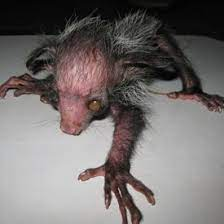
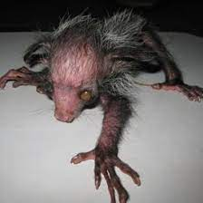

This is an "Aye Aye."


 

The aye-aye (Daubentonia madagascariensis) is a nocturnal lemur native to Madagascar, known for its bizarre appearance and unusual foraging behavior. Its elongated, skeletal fingers—especially its eerie, thin middle finger used for tapping on trees to locate insects—paired with its large, beady eyes, bat-like ears, and scruffy fur give it an unsettling, almost gremlin-like look. Many consider it ugly due to its gangly limbs, patchy fur, and ghostly stare, which have even led to local superstitions branding it as a harbinger of bad luck.
AYE AYE AYE AYE AYE AYE AYE AYE AYE AYE AYE AYE AYE AYE AYE AYE AYE AYE AYE AYE AYE AYE AYE AYE AYE AYE AYE AYE AYE AYE AYE AYE AYE AYE AYE AYE AYE AYE AYE AYE AYE AYE AYE AYE AYE AYE AYE AYE AYE AYE AYE AYE AYE AYE AYE AYE AYE AYE AYE AYE AYE AYE AYE AYE AYE AYE AYE AYE AYE AYE AYE AYE AYE AYE AYE AYE AYE AYE AYE AYE AYE AYE AYE AYE AYE AYE AYE AYE AYE AYE AYE AYE AYE AYE AYE AYE AYE AYE AYE AYE AYE AYE AYE AYE AYE AYE AYE AYE AYE AYE AYE AYE AYE AYE AYE AYE AYE AYE AYE AYE AYE AYE AYE AYE AYE AYE AYE AYE AYE AYE AYE AYE AYE AYE AYE AYE AYE AYE AYE AYE AYE AYE AYE AYE AYE AYE AYE AYE AYE AYE AYE AYE AYE AYE AYE